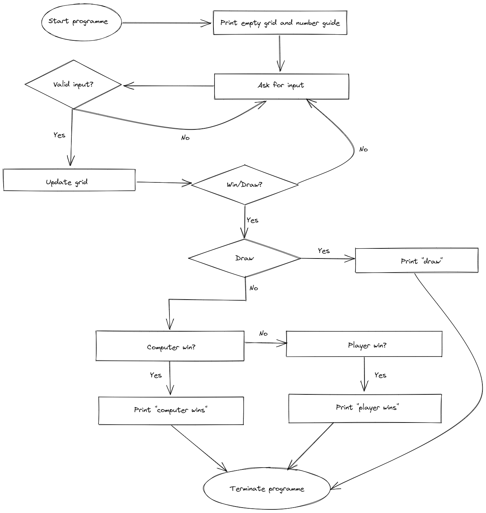

My system architecture involves 4 sections. The first section of my program will contain functions that contain the code for various features of the game modes. These functions will perform tasks such as printing the main menu, checking for win, checking for draw and printing the scoreboard. The second section will contain 3 main functions, that contain the logic for each of the game modes (singleplayer() etc.). These 3 main functions will contain the peripheral functions from the first section. The third section of the program will contain the code that makes the user modelled graphs that vary depending on user inputs. A dictionary, where the data is collected, will be converted into a CSV file (data.csv) so the data collected can be seen. Finally, the fourth section of the program will contain nested loops that will organise the CSV (collected-data.csv) into a large nested dictionary so the data can be graphed. The code for these graphs will be in this section too.
Functioning of the Game
User Interface
This flowchart represents the logic implemented in the program for the single player game mode. Other game modes are based on this same logic.
My artefact will model the game tictactoe. I will recreate the grid of tictactoe where X’s and O’s can be placed using numbers. This model will use abstraction as it only collects information essential to my investigation of my chosen hypotheses. For example, the wins, loses and draws of each game will be logged but it will disregard whether the game was won diagonally, horizontally or vertically as these are unnecessary details. Then, I can predict certain outcomes of the game depending on different factors. For example, what is the probability of a player winning if they start in the corner of the grid. .
To apply abstraction to my program, I will use functions to section off parts of code so that each block of code is given a name correlating to what it does eg. print_menu(), check_win(), clear_grid(). This way, I will be able to work more efficiently when building on top of previously written code as I will understand what each unit of code did without having to read each line. Not only will disregarding this unnecessary information allow me to work faster but the functions will make my program more organised and readable and avoid duplication of code.